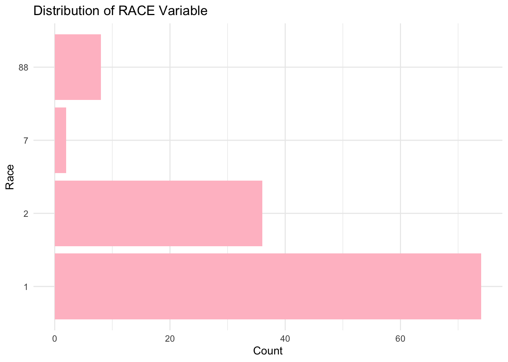
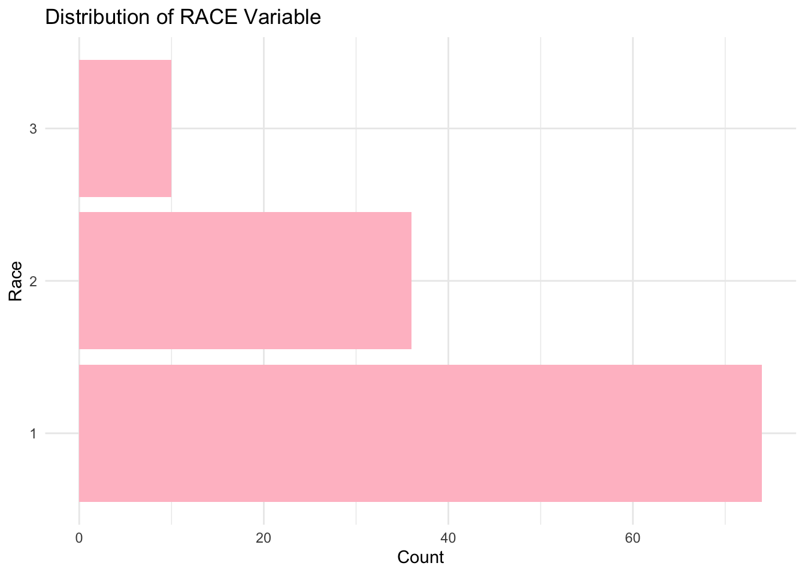

── Conflicts ────────────────────────────────────────── tidyverse_conflicts() ──
✖ dplyr::filter() masks stats::filter()
✖ dplyr::lag() masks stats::lag()
ℹ Use the conflicted package (<http://conflicted.r-lib.org/>) to force all conflicts to become errors
Loading required package: Matrix
Attaching package: 'Matrix'
The following objects are masked from 'package:tidyr':
expand, pack, unpack
Loaded glmnet 4.1-8
ggplot(drug_data, aes(x =factor(RACE))) +geom_bar(fill ="pink") +labs(title ="Distribution of RACE Variable", x ="Race", y ="Count") +theme_minimal() +coord_flip() # Flip for better readability if many categories

#Going based on distribution of race in the general population I will assume 1 = white 2= black 7= asian and 88= hispanic/latino
#combining categories 7 and 88
# Example: Combine "Asian" and "Pacific Islander" into "Asian/Pacific"drug_data$RACE <-ifelse(drug_data$RACE %in%c("7", "88"), "3", drug_data$RACE)
#CHecking to see if it worked
ggplot(drug_data, aes(x =factor(RACE))) +geom_bar(fill ="pink") +labs(title ="Distribution of RACE Variable", x ="Race", y ="Count") +theme_minimal() +coord_flip()

#Pairwise correlation for the continous variables. The continous variables are AGE, WT, HT and Y
numeric_data <- drug_data[sapply(drug_data, is.numeric)]correlation_matrix <-cor(numeric_data, use ="pairwise.complete.obs")
Warning in cor(numeric_data, use = "pairwise.complete.obs"): the standard
deviation is zero
print(correlation_matrix)
ID Y CMT EVI2 MDV DV LNDV AMT TIME DOSE
ID 1.00000000 -0.27277737 NA NA NA NA NA 0.01136475 NA 0.01136475
Y -0.27277737 1.00000000 NA NA NA NA NA 0.71808396 NA 0.71808396
CMT NA NA NA NA NA NA NA NA NA NA
EVI2 NA NA NA NA NA NA NA NA NA NA
MDV NA NA NA NA NA NA NA NA NA NA
DV NA NA NA NA NA NA NA NA NA NA
LNDV NA NA NA NA NA NA NA NA NA NA
AMT 0.01136475 0.71808396 NA NA NA NA NA 1.00000000 NA 1.00000000
TIME NA NA NA NA NA NA NA NA NA NA
DOSE 0.01136475 0.71808396 NA NA NA NA NA 1.00000000 NA 1.00000000
RATE 0.02604537 0.70657449 NA NA NA NA NA 0.99551768 NA 0.99551768
AGE -0.11382680 0.01256372 NA NA NA NA NA 0.07201600 NA 0.07201600
WT 0.17769460 -0.21287194 NA NA NA NA NA 0.10123185 NA 0.10123185
HT 0.15785828 -0.15832972 NA NA NA NA NA 0.01877994 NA 0.01877994
RATE AGE WT HT
ID 0.02604537 -0.11382680 0.17769460 0.15785828
Y 0.70657449 0.01256372 -0.21287194 -0.15832972
CMT NA NA NA NA
EVI2 NA NA NA NA
MDV NA NA NA NA
DV NA NA NA NA
LNDV NA NA NA NA
AMT 0.99551768 0.07201600 0.10123185 0.01877994
TIME NA NA NA NA
DOSE 0.99551768 0.07201600 0.10123185 0.01877994
RATE 1.00000000 0.06232124 0.09172394 0.01741403
AGE 0.06232124 1.00000000 0.11967399 -0.35185806
WT 0.09172394 0.11967399 1.00000000 0.59975050
HT 0.01741403 -0.35185806 0.59975050 1.00000000
#Feature engineering
#The formula for bmi is kg/m^2. The height variable is clearly in meters and the weight would be really small if they were in lbs so I will assume it is in kgsdrug_bmi <- drug_data %>%mutate(BMI = WT/(HT^2))
Warning: ! The following columns have zero variance so scaling cannot be used: CMT,
EVI2, MDV, DV, LNDV, and TIME.
ℹ Consider using ?step_zv (`?recipes::step_zv()`) to remove those columns
before normalizing.
workflow2 <-workflow() %>%add_model(lasso_model) %>%add_recipe(recipe1) #I can use the same recipe as the last model
#fit the data
lasso_fit <- workflow2 %>%fit(data = drug_bmi)
Warning: ! The following columns have zero variance so scaling cannot be used: CMT,
EVI2, MDV, DV, LNDV, and TIME.
ℹ Consider using ?step_zv (`?recipes::step_zv()`) to remove those columns
before normalizing.
metrics2 <- predictions2 %>%metrics( truth = Y, estimate = .pred)print(metrics2)
# A tibble: 3 × 3
.metric .estimator .estimate
<chr> <chr> <dbl>
1 rmse standard 527.
2 rsq standard 0.698
3 mae standard 405.
#The lasso and linear results are almost identical. This means that LASSO isn’t doing much feature selection so the variables that ae being used are relevant.
Warning: ! The following columns have zero variance so scaling cannot be used: CMT,
EVI2, MDV, DV, LNDV, and TIME.
ℹ Consider using ?step_zv (`?recipes::step_zv()`) to remove those columns
before normalizing.
metrics3 <- predictions3 %>%metrics( truth = Y, estimate = .pred)print(metrics3)
# A tibble: 3 × 3
.metric .estimator .estimate
<chr> <chr> <dbl>
1 rmse standard 307.
2 rsq standard 0.912
3 mae standard 228.
#The RMSE and the r-squared values are different from the linear and lasso models. The RMSE is lower while the r-squared value is higher. The dataset may be a little too complex and non-linear for linear regression so the random forest handles it better.
#Now i will plot the observed vs predicted values for each model.